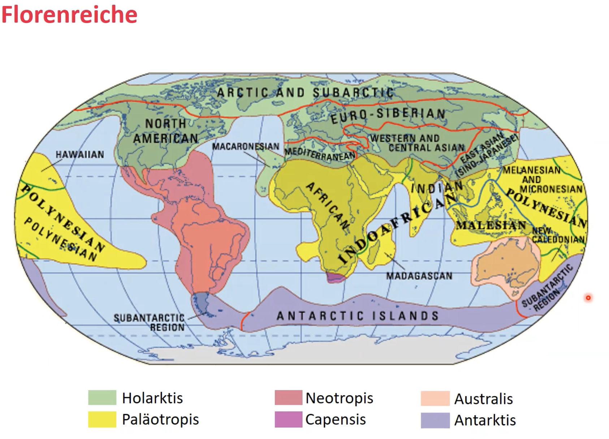
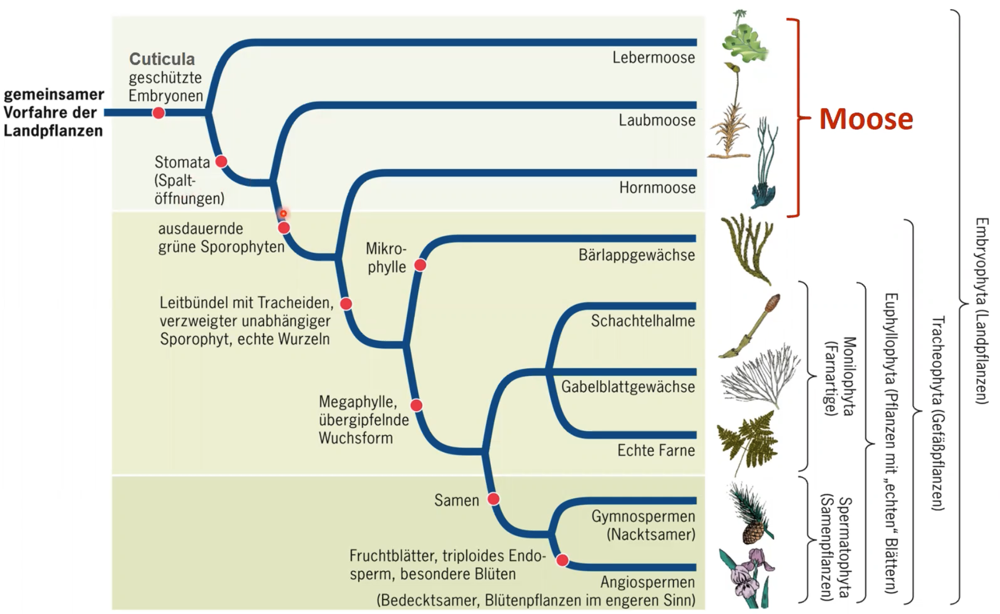
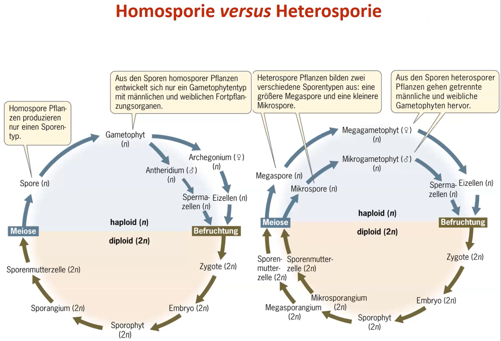
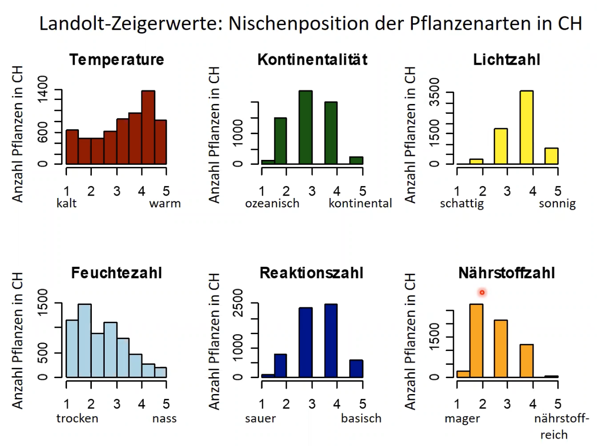

Pflanzen sind Organsismen, die neben echten Zellkernen auch Plastiden (meist Chloroplasten) als Organellen enthalten. Pflanzen sind (allermeistens) photoautotroph.
Definition Pilze
Pilze sind heterotroph wie Tiere und ernähren sich von totem organischem Gewebe, parasitär oder mutualistisch. Pilze sind jedoch sessil und weisen Zellwände (aus Chitin oft) und Vakuolen auf, haben jedoch eben keine Plastiden.
Definition Ökologie
Wissenschaftliche Untersuchung der Beziehungen zwischen Lebewesen und ihrer Umwelt.
Interaktionen zwischen Individuen mit der abiotischen Umwelt
Interaktionen zwischen Individuen der gleichen Art oder verschiedenen Arten
Häufigkeit und Verbreitung von Populationen, Arten, Lebensgemeinschaften
Stoff- und Energiehaushalt von Biosphäre, Ökosystemen, Populationen und Individuen.
Hierarchie biologischer Systeme:
Biosphäre
Biome
Ökosysteme
Lebensgemeinschaft
Population
Organismus
Geschichte des Lebens
ca. 4.8 mya Entstehung der Erde
ca. 3.8 mya Entstehung von Prokaryoten
ca. 2.8 mya Atmosphärischer Sauerstoff (Grosse Sauerstoffkatastrophe)
ca. 2.1 mya einzellige Eukaryoten
ca. 1.5 mya mehrzellige Eukaryten
ca. 0.7 mya Tiere
ca. 0.5 mya Kolonialisierung des Lande
Die Reiche der Biologie
Carl Woese definierte drei Domänen und sechs Reiche der Lebewesen. Eine einprägsame aber falsche Klassifikation. In realität sind vor Allem die basalen Gruppen viel sehr fragmentiert und nicht einfach zuzuordnen. Die Systematik Vorlesung befasst sich genauer mit diesem Thema.
Leben nach Woese:
Prokaryoten
Prokaryoten zeichnen sich vor allen Dingen durch folgende Merkmale aus:
fehlen eines Zellkerns
vorhandensein von Plasmiden (zusätlzich zum 'Kern'-Genom)
Prokaryoten sind kleiner als Eukaryoten
verfügen über keine Zellorganellen
Fortpflanzung über Zellteilung, Genome mischen sich häufig über horizontalen Gentransfer
Bacteria
Archaea
Eukaryoten
Eukaryoten zeichnen sich vor allen Dingen durch folgende Merkmale aus:
Zellkern und grössere Komplexität als bei PK.
grösser als PK
vorwiegend sexuelle Fortpflanzung
Zellorganellen vorhanden
Protisten
Plantae
Fungi
Animalia
Endosymbiontentheorie
Erklärung für das Aufkommen von Eukaryoten.
Prokarytische Zelle, die ein Bakterium als Mitochondrium verschluckt gilt als Vorläufer der heterotrophen, tierischen Zellen
Prokarytische Zelle, die ein Cyanobakterium als Chloroplast verschluckt, gilt als Vorläufer von autotrophen, pflanzlichen Zellen
Einige unterstützende Argumente zur Endosymbiontentheorie:
Mitochondrien und Chloroplasten besitzen DNA, die ähnlich ist zu jener der Bakterien
Sie sind ähnlich gross und reproduzieren sich durch binäre Zweiteilung wie Prokaryoten
Das Membran-Lipid Cardiolipin kommt ausschliesslich in der inneren Mitochondrienmembran und in Bakterienmembranen vor.
Einige Transportproteine (Porine) kommen in Bakterien, Mitochondrien und Chloroplasten vor.
Genomvergleiche zeigen auf grosse Ähnlichkeit zwischen Mitochondrien und Bakterien, bzw. zwischen Chloroplasten und Cyanobakterien.
Interne Struktur der Plastiden (Thylakoide und Chlorophyll) ist sehr ähnlich zu jener von Cyanobakterien.
Ribosomen in Mitochondrien und Chloroplasten sind ähnlicher zu jenen in Bakterien als jene in Eukaryoten.
Chloroplasten finden sich in verschiedenen Protisten, die nah verwandt sind mit Plastiden-freien Arten -> Wenn Plastiden mehrmals unabhängig entstanden sind, ist ihre grosse Ähnlichkeit schwierig zu erklären.
Wichtige Schritte der Evolution
Kernphasenwechsel
Kernphasenwechsel bezeichnet den Wechsel der Anzahl Chromosomensätze im Lebensalaufe eines Organismus. Dieser Wechsel erfolgt bei allen sich sexuell fortpflanzenden Organismen.
Organismus verbringt die allermeiste Zeit haploid, das heisst Meiose erfolgt direkt nach der Syngamie (eher selten). Bsp: Spirogyra spec.
Diplontischer Kernphasenwechsel
Organismus verbringt meiste Zeit diploid, auf Meiose erfolgt direkt die Syngamie. Bsp: Mensch.
Heterophasicher Kernphasenwechsel
Organismus macht zwischen Meiose und Syngamie jeweils noch Mitose, dass heisst der Organismus verbringt eine gewisse, signifikante Zeit in beiden Zuständen, haploid und diploid. Bsp. die meisten Pflanzen.
Generationswehchsel
Der Generationswechsel beschreibt die physio- und morphologischen Zustände eines Organismus mit heterophasischem Kernphasenwechsel. Insbesondere werden der diploide Sporophyt und der haploide Gametophyt sowie deren Transformationen beschrieben.
Im Allgemeinen sieht der Ablauf eines Generationenwechsel folgendermassen aus:
…diploide Zygote (junger Sporophyt) –> Sporophyt –> Spor (produziert vom Sporophyten) –> haploider Gametophyt –> Gameten –> diploide Zygote …
Isomorpher Generationenwechsel
Sporo- und Gametophyt sehen gleich aus. Bsp: einige Algen
Pilze sind die einzigen Organismen, die Lignin (Holz) abbauen können. Als die ersten Wälder enstanden sind, gab es solche Pilze jedoch noch nicht. Dadurch, und durch das einschliessen im Wasser, wurde das Holz nicht abgebaut. So kam es zur Fossilation.
Florenreiche
charakterisiert durch das exklusive Auftragen von bestimmten Pflanzengattungen/-familien in bestimmten Regionen.

Moose
Systematik
Die Landpflanzen weisen folgende wichtige Apomorhien auf:
Embryo
Cuticula
Die Moose sind dabei die ursprünglichsten Landplfanzen.
Die Moose werden unterteilt in:
Lebermoose
Laubmoose
Hornmoose
Laub- und Hornmoose haben dabei bereits Stomata entwickelt.

Charakteristika
Von 400-400 Mio Jahren aus den Grünalgen entstanden
In drei Grossgruppen eingeteilt (Leber, Laub und Hornmoose)
Erste Landpflanzen
Sporophyt und Gametophyt sind heteromorph.
Sporophyt wird von Gametophyt ernährt, ist nicht eigenständig (meistens)
Stärke als Speichersubstanz
Chlorophyll a und b als Photosynthesepigmente
Zellwände aus Zellulose
Haben in der Regel kein Stütz und Leitgewebe
Generationswechsel
Vorkommen
Farne und Verwandte
Systematik
wichtige Apomorphien der Gefässpflanzen:
Leitbündel
verzweigter, unabhängiger Sporophyt
echte Wurzeln
Dabei entwickelten die Bärlappartigen Mikropylle und die Farnartigen Makrophylle
Charakteristika
Anpassung an das Landleben
Echte Wurzeln
Echte Blätter
Effiziente Wasserleitgefässe
Verholzung und baumförmige Lebensform (verholzte Formen kommen heute hauptsächlich in den Tropen vor)
Generationswechsel
Bärlappgewächse
Bärlappe
Gametophyt ist nicht grün, unterirdisch und recht langlebig. Gametophyt lebt parasitär und wird von einem Pilz ernährt.
Strobilus besteht aus mehreren Sporangien. Vorläufer des Tannenzapfens.
Moosfarne
Moosfarne sind speziell, da sie heterospor sind. Sporen von heterosporen pflanzen sind unterschiedlich (Mega- und Mikrospore) und führen entsprechend zu unterschiedlichen Gametophyten (Mega- und Mikrogametophyt), welche die Geschlechter vorgeben (Mikro = männlich).

Farne
Vorkommen und Vielfalt
Bärlappgewächse
Älteste noch bestehende Gefässpflanze
Bärlappsporen sind extrem entzündlich!
Anwendung in der Pyrotechnik
Life History
<2023-05-02 Tue>
Klassifikation von Plfanzen
Lebensdauer
Häufigkeit der Reproduktion
verholzte vs. krautige
Raunkiaers Lebensformen
Phanerophyten
Dominant in tropischen Regionen (viele Bäume).
Chamaephyten
Kryptophyten
Dominant in temperatien und alpinen Regionen.
Geophyten
Hydrophyten
Therophyten
Dominant in Wüstengebieten
r- und k-Selektion
Grime's CSR-Dreieck
Life-History Evolution
Life-history Merkmale
Wachstumsrate
Reproduktionsrate
Phänologie
Mortalitä und Lebenserwartung
Anzahl und Grösse der Samen
Resourcenallokation
Life-history Merkmale sind teilweise negativ miteinander korreliert –> es gibt trade-offs!
Beispiel: Wachstum vs. Reproduktion, Anzahl vs. Grösse der Samen
Intra-specific-trade-offs
Seneszenz bei Pflanzen
Umweltstochastizität
Bet-hedging
Reproduktion
vegetativen Reproduktion
sexualle Reproduktion
Intrasepzifische Konkurrenz
<2023-05-05 Fri>
Umweltbedingungen und Nischen
Arten können unter bestimmten Umweltbedingungen überleben und / oder reproduzieren. Diese Range wird Nische genannt.
Nischen können entsprechend eng oder breit sein, was wiederum Eigenschaften über die spezies enthüllt (Spezialist? Generalist?).

Durch bekannte (Landolt-)Zeigerwerte kann auf lokale Umweltfaktoren geschlossen werden:
Man macht eine Vegetationsaufnahme im lokalen Bereich und schätzt den Deckungsgrad der einzelnen Spezies. Dann nimmt man die jeweiligen Zeigerwerte für die interessanten Umweltfaktoren (Temperatur, Nährstoffe etc.) und mittelt diese gewichtet nach Artendeckung und erhält eine gute Schätzung über den Umweltfaktor, ohne direkte Proben zu nehmen.
Umgekehrt kann auch die Nischenbreite einer Spezies geschätzt werden. Man nimmt den mittleren Zeigerwert von einer grossen Zahl (bsp 500) Lenbensgemeinschaften, wo die interessante Spezies vorkomment. Dann plottet man diese 500 Mittelwerte und erhält eine Approximation der Nische dieser Spezies.
Häufigkeit und Seltenheit
Geografische Verbreitung (Kosmopolit vs Endemit)
Nischenbreite (Spezialist vs Generalist)
Stetigkeit (kommt die )
fundamentale vs realisierte Nische
fundamentale Nische
idealistierter Raum mit allen abiotischen Faktoren ohne andere Organsismen.